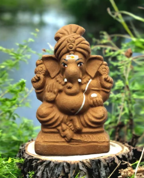

Ganesh Chaturthi, also known as Vinayaka Chavithi, is a Hindu festival celebrating the birth of Lord Ganesha — the remover of obstacles and god of wisdom. The tradition of public celebration was popularized by Bal Gangadhar Tilak in the 19th century during India's independence movement, as a way to bring communities together. Over time, the festival grew into a grand public event with beautifully crafted idols and elaborate rituals. Although the exact origin of Ganesh Chaturthi is uncertain, it has been publicly celebrated in Pune since the time of King Shivaji (1630–1680), founder of the Maratha Empire. In the 18th century, the Peshwas, who were devotees of Ganesha, promoted it as a public festival during the Bhadrapada month. During the British rule, the festival lost its state patronage and became a private family celebration in Maharashtra. It was later revived by freedom fighter Lokmanya Tilak in 1892, who transformed it into a mass public event to bypass British restrictions on Hindu gatherings. Major celebrations began in Pune and Girgaon, Mumbai.
The festival of Ganesh Chaturthi marks the joyous arrival of Lord Ganesha from Kailash Parvat to Earth, accompanied by his divine mother, Goddess Parvati. It signifies not just a religious occasion, but also the deeper spiritual meaning of the cycle of birth, life, and death. Devotees welcome Lord Ganesha into their homes and hearts with immense devotion, believing that his presence brings prosperity, wisdom, and protection. One of the most symbolic aspects of the festival is the Ganesh Visarjan — the immersion of the idol into a water body. This act represents the transience of life and the idea of letting go. It is widely believed that when Lord Ganesha departs, he carries away all the sorrows, negativities, and obstacles from the lives of his devotees, leaving behind peace and renewed hope. The days leading to the immersion are filled with prayers, aartis, bhajans, and cultural performances. Communities unite to decorate pandals, share sweets like modaks (Lord Ganesha’s favorite), and participate in the collective celebration of faith and joy. Every year, people wait with great anticipation and love for Ganesh Chaturthi, cherishing the divine energy and unity it brings into their lives and surroundings.
The celebrations begin with the installation of clay idols of Ganesha at homes and in public pandals (temporary structures). Devotees offer modaks, laddus, durva grass, red hibiscus flowers, and coconut to the deity. Daily prayers, bhajans, and aarti are performed during the 10-day celebration.
In Maharashtra, Ganesh Chaturthi is popularly known as Ganeshotsav. Families install clay murtis of Lord Ganesha at home, bought in advance from local artisans. Homes are decorated with flowers, lights, and rangoli. The idol is installed with Vedic chants and aarti, followed by daily worship with durva grass, modaks, and karanjis. The Marathi aarti “Sukhakarta Dukhaharta”, composed by Samarth Ramdas, is traditionally sung. The immersion (Visarjan) is done after 1.5, 3, 5, 7, or 11 days. Festivals like Hartalika (observed by fasting women) and the Gauri festival also occur during Ganeshotsav.
Known as Chavath or Parab in Konkani, the festival begins on the third day of Bhadrapada. Women worship Shiva and Parvati with fasting and rituals. Traditional instruments like ghumots, taal, and pakhavaj are played. The next day marks the harvest festival Navyachi Pancham, where fresh paddy is worshipped. Many Goan communities also abstain from seafood during this period.
Ganesh Chaturthi is preceded by the Gowri Festival, where women worship Goddess Gowri for prosperity and marital happiness. Festive greetings and community gatherings mark the celebration.
Homes worship clay idolsMatti Vinayakudu and turmeric idolsSiddhi Vinayakudu. Public celebrations often feature large plaster of Paris idols, though eco-friendly practices are gaining popularity.
Ganesh Chaturthi is widely celebrated across Maharashtra, Andhra Pradesh, Karnataka, Tamil Nadu, and Telangana. In Mumbai, it is celebrated with the greatest grandeur, with elaborate pandals, social themes, and lakhs of devotees visiting famous Ganeshas like Lalbaugcha Raja and Siddhivinayak Temple. The festival is also celebrated globally by Indian communities in countries like the USA, UK, Mauritius, and Singapore.